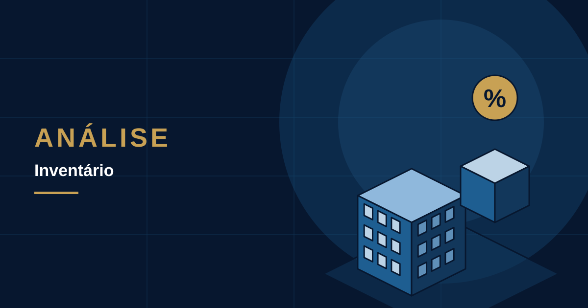

PUBLICAÇÕES
Publicações.
Análises jurídicas, reflexões e acontecimentos que merecem atenção.
PRODUÇÃO INTELECTUAL E AUTORAL
Artigos e Análises
Comentários, interpretações jurídicas, estudos e reflexões de Liandro Faro.

Usucapião: quando cabe, quando não cabe e como pedir.
